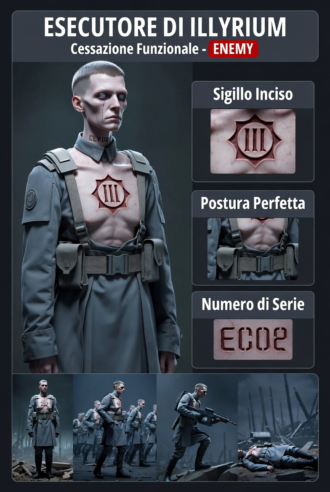

Cessazione Funzionale
Non sono nati. Sono stati fatti.
ENEMY✓ IMPLEMENTATO#606878#C0C4CC#882222| Zona | Hex | |
|---|---|---|
| Pelle cadaverica | #C0C4CC | |
| Ombre pelle | #8890A0 | |
| Occhi vuoti | #D0D8E0 | |
| Capelli corti | #A0A8B0 | |
| Trench coat | #606878 | |
| Ombre cappotto | #3A404A | |
| Cinghie tattiche | #4A5040 | |
| Stivali | #282828 | |
| Sigillo III (rosso) | #882222 | |
| Numero di serie | #882222 |
#3A4050 invece di #606878 — più scuro, stessa famiglia cromatica.| Stato | HP | Occhi | Sigillo |
|---|---|---|---|
| Operativo | 100–71% | #FFFFFF bianchi | luminoso |
| Degrado | 70–41% | un occhio #FFFFFF + uno #222222 | attivo |
| Critico | 40–1% | #222222 entrambi | spento |
| Collasso | 0% | corpo cade dritto — nessun suono | |
| Meccanica | Dettaglio |
|---|---|
| Formazione a slot | Leader occupa sempre il fronte — il gruppo si ridistribuisce attorno al giocatore |
| Ricalibrazione | Pausa 600-800ms alla morte di un'unità — slot ridistribuiti in silenzio |
| Coordinamento | Nessun segnale visibile tra loro — si muovono come se fosse già avvenuto altrove |
| Morte | Cade dritto, nessun grido, nessun blood pool — corpo resta al suolo |
docs/superpowers/specs/2026-05-19-esecutori-design.md